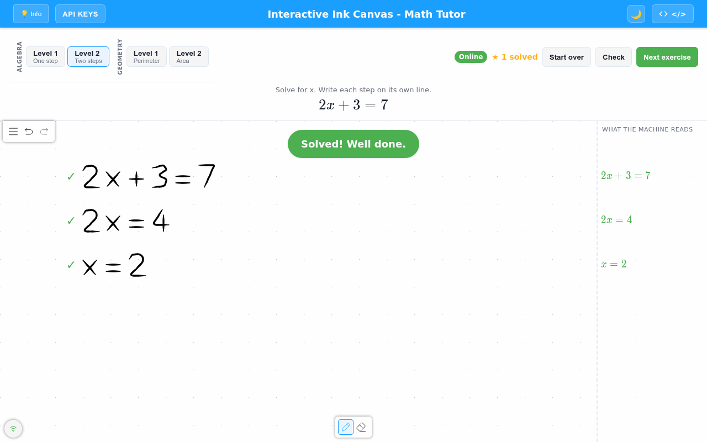
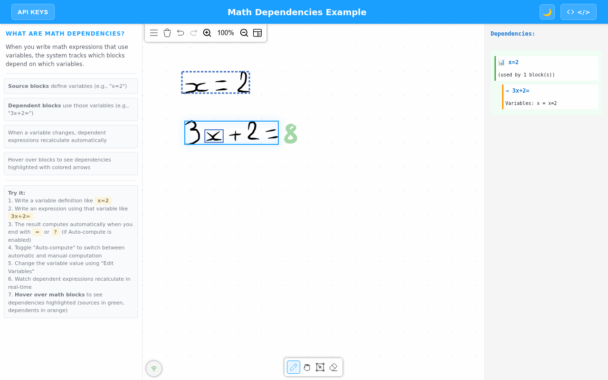
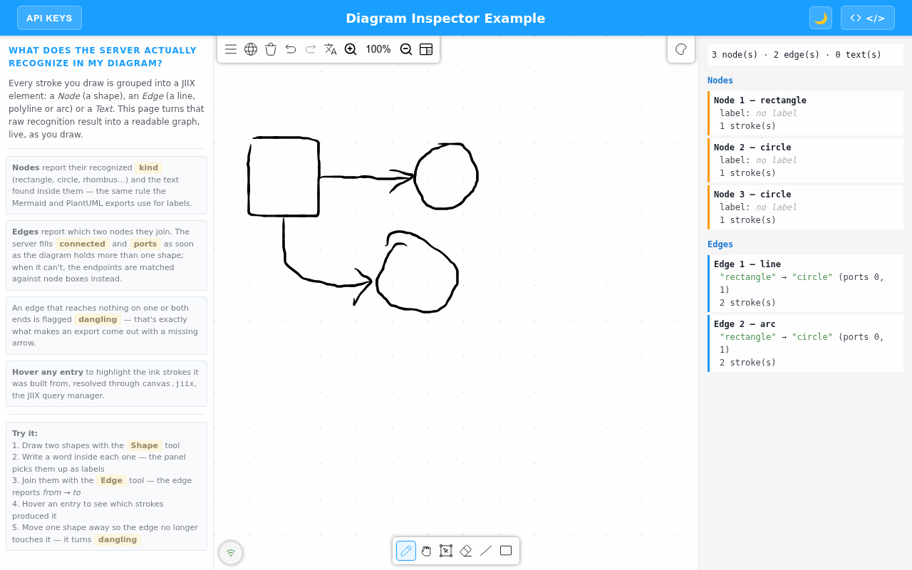
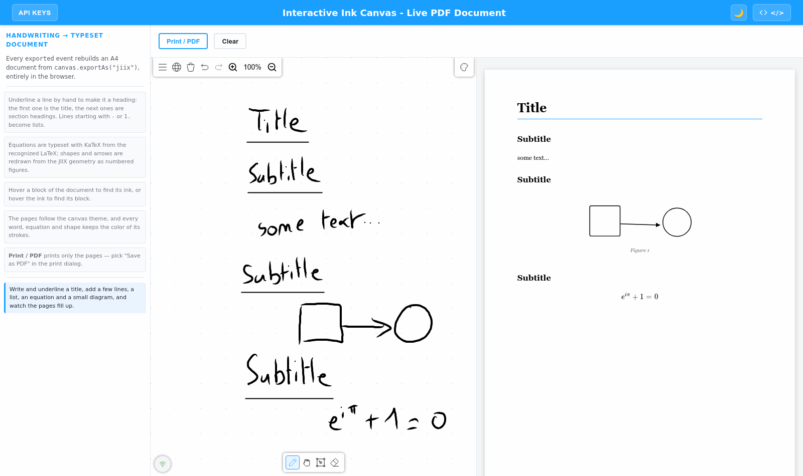
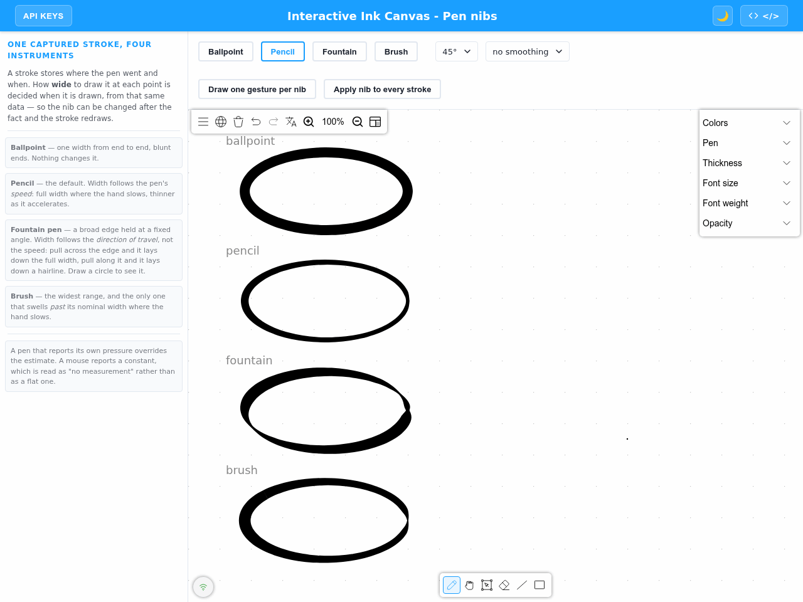
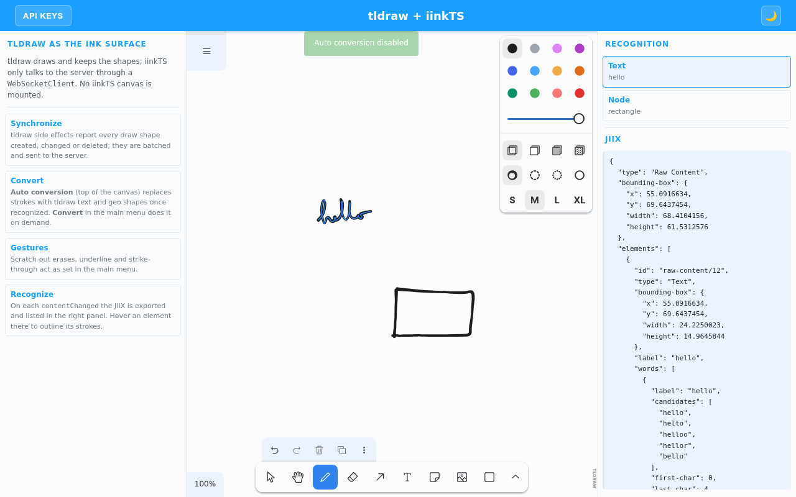

iink-ts - v1.0.0-buildVersion
iinkTS


The fastest way to integrate rich handwriting features in your webapp.
:point_right: Examples:point_left:

iinkTS is a TypeScript library that can be used in every web application to bring handwriting recognition: text, math and diagrams.
It integrates all you need:
- Signal capture for all devices,
- Digital ink rendering,
- Link to MyScript Cloud to bring handwriting recognition,
- Editing, conversion and export of what was written.
Table of contents
- Features
- Gallery
- Examples by use case
- Requirements
- Installation
- Usage
- Documentation
- Architecture
- Migration
- Development
- Support
- Feedback
- Contributing
- Troubleshooting
- License
Features
- Text: real-time recognition in 72 languages, vertical Japanese included.
- Math: more than 200 symbols, a solver that evaluates and solves what you write, variables shared between blocks, and results that recompute when a variable changes.
- Diagrams: shapes and connectors are recognized as you draw, connectors stay attached when you move a shape, and the whole diagram converts to clean typeset shapes.
- Editing gestures: scratch-out, strike-through, surround, underline, insert and join.
- Pen nibs: ballpoint, pencil, fountain pen and brush, from the same captured stroke.
- Export: JIIX, text, JSON, SVG, PNG, Markdown, Mermaid, PlantUML, prompt-ready blocks for LLMs, and PDF.
- Integrations: runs inside tldraw and Excalidraw whiteboards.
- Customizable: themes and styles, menus you can extend or replace, keyboard shortcuts, minimap, zoom and pan.
- Resilient: reconnects on its own after a network drop and replays what was written offline.
You can discover all the features on our Developer website for Text and Math.
Gallery
 Math tutor: each line of the reasoning is checked |
 Math solver: x = 2 feeds 3x + 2 = |
 Diagrams: shapes and connectors read as a graph |
 Live PDF: handwriting becomes a typeset document |
 Pen nibs: one stroke, four instruments |
 tldraw: recognition inside a whiteboard |
Examples by use case
All examples run live on the examples page.
| Use case | Examples |
|---|---|
| Education | Math tutor, math solver, exam and grading forms |
| Note-taking and documents | Live PDF document, Markdown export, gestures |
| Diagrams and whiteboards | Diagram inspector, Mermaid and PlantUML export, tldraw, Excalidraw |
Requirements
- Have npm, yarn.
- Have a MyScript developer account. You can create one here.
- Get your keys and the free monthly quota to access MyScript Cloud at developer.myscript.com
Installation
iinkTS can be installed with the well known package managers npm, yarn.
If you want to use npm or yarn you first have to init a project (or use an existing one).
npm init
OR
yarn init
You can then install iinkTS and use it as showed in the Usage section.
npm install iink-ts
OR
yarn add iink-ts
Usage
Universal Module Definition (UMD)
-
Create an
index.htmlfile in the same directory. -
Add the following lines in the
headsection of your file to use iinkTS and the css :
<script src="node_modules/iink-ts/dist/iink.min.js"></script>
- Still in the
headsection, add astyleand specify the height and the width of your canvas:
<style>
#canvas {
width: 100%;
height: 100%;
}
</style>
- In the
bodytag, create adivtag that will contain the drawing area:
<div id="canvas"></div>
- In JavaScript and within a
<script>tag placed before the closing</body>tag, create the canvas using theloadfunction, your HTML element, the desired type and the possible options depending on the type, then initialize it:
const canvasElement = document.getElementById('canvas');
const options = {
configuration: {
server: {
scheme: "https",
host: "cloud.myscript.com",
applicationKey: "<YOU-APPLICATION-KEY>",
hmacKey: "<YOUR-HMAC-KEY>", // development only: in production, use sign (see Authentication)
}
}
}
const canvasType = "INTERACTIVE_INK" /* or INTERACTIVE_INK_SSR or INK_V1 or INK_V2 */
const canvas = iink.Canvas.load(canvasElement, canvasType, options);
- Your
index.htmlfile should look like this:
<html>
<head>
<script src="node_modules/iink-ts/dist/iink.min.js"></script>
<style>
#canvas {
width: 100%;
height: 100%;
}
</style>
</head>
<body>
<div id="canvas"></div>
<script>
const canvasElement = document.getElementById("canvas")
const options = {
configuration: {
server: {
scheme: "https",
host: "cloud.myscript.com",
applicationKey: "<YOU-APPLICATION-KEY>",
hmacKey: "<YOUR-HMAC-KEY>", // development only: in production, use sign (see Authentication)
},
}
}
const canvasType = "INTERACTIVE_INK" /* or INTERACTIVE_INK_SSR or INK_V1 or INK_V2 */
const canvas = iink.Canvas.load(canvasElement, canvasType, options)
</script>
</body>
</html>
- Open
index.htmlin your browser or serve your folder content using any web server.
You can find this guide, and a more complete example on the MyScript Developer website.
ECMAScript module (ESM)
-
Create an
index.htmlfile in the same directory. -
Add the following lines in the
bodysection of your file to use iinkTS and the css :
<body>
<div id="canvasEl"></div>
<script type="module">
import { Canvas, getAvailableLanguageList } from "../../dist/iink.esm.js"
const canvasElement = document.getElementById("canvasEl")
const options = {
configuration : {
server: {
scheme: "https",
host: "cloud.myscript.com",
applicationKey: "<YOU-APPLICATION-KEY>",
hmacKey: "<YOUR-HMAC-KEY>", // development only: in production, use sign (see Authentication)
},
}
}
const canvasType =
"INTERACTIVE_INK" /* or INTERACTIVE_INK_SSR or INK_V1 or INK_V2 */
const canvas = await Canvas.load(canvasElement, canvasType, options)
</script>
</body>
- Your
index.htmlfile should look like this:
<html>
<head>
<style>
#canvasEl {
width: 100%;
height: 100%;
}
</style>
</head>
<body>
<div id="canvasEl"></div>
<script type="module">
import { Canvas, getAvailableLanguageList } from '../../dist/iink.esm.js'
const canvasElement = document.getElementById('canvasEl')
const options = {
configuration: {
server: {
scheme: "https",
host: "cloud.myscript.com",
applicationKey: "<YOU-APPLICATION-KEY>",
hmacKey: "<YOUR-HMAC-KEY>", // development only: in production, use sign (see Authentication)
}
}
}
const canvas = await Canvas.load(canvasElement, 'INTERACTIVE_INK_SSR', options)
</script>
</body>
</html>
Authentication
The MyScript server checks an HMAC signature computed with your HMAC key. Do not ship the HMAC key to
the browser: anyone can read it there and use your quota. Keep it on a server you own and let the
canvas ask that server for each signature with server.sign:
const options = {
configuration: {
server: {
scheme: "https",
host: "cloud.myscript.com",
applicationKey: "<YOU-APPLICATION-KEY>",
hmacKey: "",
sign: async (message) => {
const response = await fetch("/sign", {
method: "POST",
headers: { "Content-Type": "application/json" },
body: JSON.stringify({ message }),
})
return (await response.json()).signature
},
},
},
}
message is the WebSocket HMAC challenge, or the body of an HTTP recognition request. The server
returns HMAC-SHA512 of it, keyed by the application key followed by the HMAC key, as lowercase hex. In
Node:
import { createHmac } from "node:crypto"
const signature = createHmac("sha512", APPLICATION_KEY + HMAC_KEY).update(message).digest("hex")
Put the signing route behind your own authentication and rate-limit it: whoever can call it can get
messages signed. examples/server-signing/server.js is a complete, dependency-free
signing server with a page that holds no credential at all:
node --env-file=.env.local examples/server-signing/server.js
hmacKey as a string remains for development and prototypes.
Documentation
You can find a complete documentation with the following sections on our Developer website:
- Get Started: how to use iinkTS with a full example,
- Editing: how to interact with content,
- Conversion: how to convert your handwritten content,
- Import and Export: how to import and export your content,
- Styling: how to style content.
We also provide a complete API Reference.
Architecture
If you're integrating iinkTS or rebuilding your own client from scratch, these diagrams cover the class organization and the WebSocket protocol:
- architecture/interactive-ink-canvas.md — class diagram of the
INTERACTIVE_INK(WebSocket, real-time) variant and its managers. - architecture/ink-canvas.md — class diagram of the
INK_V2(HTTP batch) variant and the deprecatedINK_V1. - architecture/websocket-protocol.md — sequence diagram of the messages exchanged between the WebSocket client and the MyScript backend (auth, session, strokes, recognition, export, undo/redo, errors/reconnection).
Migration
Upgrading from an earlier major version? See MIGRATION.md for breaking changes and step-by-step instructions.
iinkTS follows semantic versioning for the API the guides on the Developer website describe: Canvas.load, the configuration, the canvas methods and events, and the classes options.override accepts. The API Reference lists everything the package exports; the rest of it (managers, renderers, internal helpers) may change in a minor release, and so may subclassing a class options.override does not accept.
Development
Instructions to help you build the project and develop are available in the SETUP.md file.
Getting support
You can get support and ask your questions on the dedicated section of MyScript Developer website.
Sharing your feedback
Made a cool app with iinkTS? We would love to hear about you! We’re planning to showcase apps using it so let us know by sending a quick mail to myapp@myscript.com.
Contributing
We welcome your contributions: if you would like to extend iinkTS for your needs, feel free to fork it!
Please take a look at our contributing guidelines before submitting your pull request.
To report a bug or ask for a feature, open an issue.
Troubleshooting
If you encounter the error: Unrecognized property: convert.force, this means your server version is lower than 2.3.0.
To correct the problem, you have 2 options:
- either update your server
- either add in the iink-ts configuration
configuration.server.info.version = 2.2.0
If you encounter the error: Unrecognized property: configuration.export.jiix.text.lines, this means your server version is lower than 3.2.0.
To correct the problem, you have 2 options:
- either update your server
- either add in the iink-ts configuration
configuration.server.info.version = 3.1.0
License
This library is licensed under the Apache 2.0.